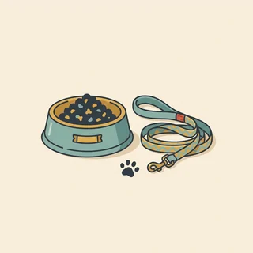
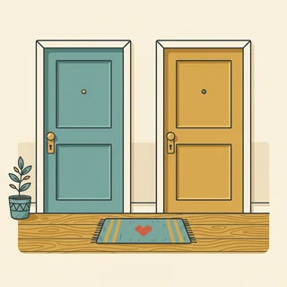
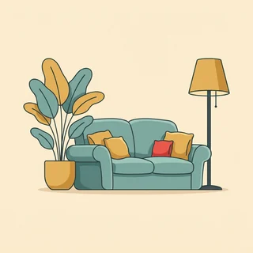
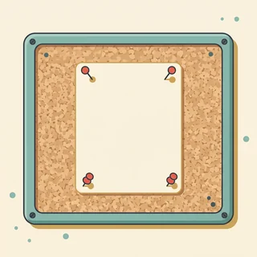
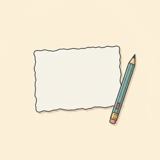
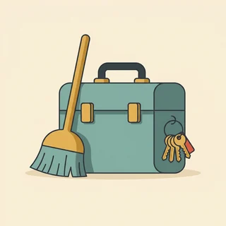

deutschoderwas · Sprechclub · Woche 6 · Strang C · Teil 1 · Montag, 19. Oktober
Haustiere in der Mietwohnung: Hund, Katze, Nachbarn, Vermieter
Kaum ein Thema bringt in einem deutschen Mietshaus so verlässlich Streit wie ein Hund im dritten Stock. Dabei geht es fast nie um das Tier, sondern um Lärm, Gerüche, Angst und darum, dass niemand gefragt wurde. Heute holen wir uns die Wörter dafür — und die Sätze, mit denen man um Erlaubnis bittet, ohne zu betteln.
Dein Niveau
Gleiches Thema, andere Sätze. Wechsle jederzeit — probier ruhig beide Seiten aus.
Ein Hund zieht ein — wer muss eigentlich gefragt werden?
Stell dir vor, du möchtest einen Hund. Die Wohnung ist gemietet, im Treppenhaus wohnen fünf Parteien, und im Mietvertrag steht ein Satz über Tierhaltung, den du noch nie gelesen hast. Bevor irgendjemand streitet, lohnt sich eine Minute Nachdenken: Wen betrifft das überhaupt?

Hast du ein Haustier — oder hättest du gern eins?
Welche Tiere sind in deinem Heimatland in Wohnungen normal?
Wen würdest du zuerst fragen: den Vermieter oder die Nachbarn?
Wo verläuft für dich die Grenze zwischen Privatsache und Sache des Hauses?
Warum reagieren Menschen bei Tieren oft heftiger als bei Musik oder Besuch?
Kann ein Vermieter überhaupt beurteilen, ob ein Tier stört?
🔑 Die deutsche Grundregel in einem Satz:Kleintiere ja, große Tiere fragen. Fische, Hamster, Wellensittiche gelten als Kleintiere und brauchen in der Regel keine Erlaubnis. Bei Hund und Katze sieht es anders aus — dort ist die Zustimmung des Vermieters das Wort, um das sich alles dreht.
Es geht selten um das Tier
Wenn man genau hinhört, sagt niemand „Ich mag keine Hunde“. Man hört: Er bellt, wenn ihr weg seid.Meine Tochter hat Angst im Treppenhaus.Ich bin allergisch. Das sind vier ganz verschiedene Probleme — und jedes hat eine eigene Lösung.

Was stört Nachbarn an einem Tier am meisten?
Was könnte man dagegen tun?
Wie merkst du, ob sich jemand ärgert?
Wie unterscheidet man einen echten Einwand von einer allgemeinen Abneigung?
Wann ist ein Nachbar im Recht, auch wenn er unfreundlich klingt?
Was wäre ein Angebot, das ein Gespräch sofort entspannt?
💡 Der Satz, der jedes Gespräch öffnet:„Was genau stört dich — dann finden wir dafür etwas.“ Er nimmt den Einwand ernst und macht aus einem Streit über Tiere eine Aufgabe, die zwei Leute gemeinsam lösen. Und du erfährst nebenbei, worum es wirklich geht.
Zwölf Wörter vom Mietvertrag bis zum Treppenhaus
Sagt jedes Wort laut — mit Artikel. Und gleich einen Satz hinterher: Wo in deinem Haus würdest du dieses Wort brauchen?
das Haustier
„Ich hätte gern ein Haustier, aber die Wohnung ist klein.“
💡 Im Mietrecht wird unterschieden zwischen Kleintieren (Fische, Hamster, Wellensittiche) und größeren Tieren. Die Unterscheidung klingt spitzfindig, entscheidet aber darüber, ob du fragen musst.

die Mietwohnung
„In einer Mietwohnung darf man nicht alles allein entscheiden.“
💡 Achte auf den Unterschied: mieten heißt bezahlen und wohnen, vermieten heißt besitzen und hergeben. Wer vermietet, ist der Vermieter — wer mietet, der Mieter.
die Zustimmung
„Dafür brauche ich die Zustimmung des Vermieters.“
💡 Das Schlüsselwort dieser Stunde. Dazu gehört das Verb zustimmen — und Achtung, es steht mit Dativ: Er stimmt dem Vorschlag zu.

die Hausordnung
„Das steht so in der Hausordnung im Treppenhaus.“
💡 Hängt fast immer im Hausflur oder im Keller aus. Sie regelt Ruhezeiten, Müll, Treppenhaus — und manchmal auch Tiere. Ein Blick darauf spart viele Diskussionen.
die Vermieterin
„Ich schreibe der Vermieterin und frage nach.“
💡 Männlich: der Vermieter. Und ein Wort, das oft dazwischensteht: die Hausverwaltung — eine Firma, die für den Vermieter antwortet. Dann schreibst du dorthin.
der Nachbar
„Ich habe vorher mit den Nachbarn gesprochen.“
💡 Ein n-Nomen: der Nachbar, aber dem Nachbarn, den Nachbarn, die Nachbarn. Weiblich: die Nachbarin.
die Ruhezeit
„Nach zweiundzwanzig Uhr ist Ruhezeit.“
💡 Meistens nachts von 22 bis 6 Uhr, oft zusätzlich mittags. Die genauen Zeiten stehen in der Hausordnung und sind nicht überall gleich — deshalb lohnt sich das Nachlesen.

die Beschwerde
„Es gab eine Beschwerde wegen des Bellens.“
💡 Dazu das Verb sich beschweren — reflexiv und mit über: Sie beschwert sich über den Lärm. Ein Zettel an der Tür ist übrigens die häufigste Form davon.
die Auflage
„Die Erlaubnis gilt nur mit zwei Auflagen.“
💡 Das Wort aus jedem amtlichen Brief: unter der Auflage, dass … Es heißt schlicht: Du darfst — aber nur, wenn du dich an etwas hältst. Sehr nützlich, wenn du selbst etwas anbietest.
die Allergie
„Meine Nachbarin hat eine Allergie gegen Katzenhaare.“
💡 Mit gegen: eine Allergie gegen Tierhaare. Als Adjektiv allergisch gegen. Und das ist der eine Einwand, den man nicht wegdiskutieren kann — er braucht eine praktische Lösung.

der Hausmeister
„Der Hausmeister hat mich im Treppenhaus angesprochen.“
💡 In vielen Häusern der Mensch, der wirklich alles mitbekommt. Wer ihn früh und freundlich informiert, hat später einen Fürsprecher statt eines Melders.
die Rücksicht
„Wir nehmen Rücksicht auf die Nachbarn.“
💡 Fast immer in der festen Wendung Rücksicht nehmen auf + Akkusativ. Das Adjektiv dazu: rücksichtsvoll — eines der größten Komplimente, die man im deutschen Mietshaus bekommen kann.
💡 Spiel „Der Zettel im Treppenhaus“: Jeder schreibt in dreißig Sekunden eine Beschwerde auf einen gedachten Zettel — ein Satz, unfreundlich. Der Nachbar liest sie vor und formuliert sie sofort freundlich um, ohne den Inhalt zu ändern. Ihr werdet merken: Der Inhalt ist fast immer berechtigt, der Ton fast nie.
Lärm, Angst oder Gesundheit?
Wenn ein Nachbar etwas gegen das Tier hat, steckt fast immer einer von drei Gründen dahinter. Und jeder braucht eine andere Antwort — mit der falschen macht man aus einem lösbaren Problem einen Dauerstreit.
🔊
der Lärm
bellen, kratzen, nachts unruhig sein
Er bellt, wenn ihr nicht da seid.
😰
die Angst
im Treppenhaus, im Aufzug, mit Kindern
Meine Tochter traut sich nicht mehr raus.
🤧
die Gesundheit
Allergie, Hygiene, Gerüche
Ich bin allergisch gegen Katzenhaare.
✅ Führt weiter
Was genau stört dich — dann finden wir dafür etwas.
Warum das funktioniertDu fragst nach dem konkreten Punkt statt nach der Meinung. Damit wird aus ich bin dagegen ein einzelnes Problem, das eine Lösung haben kann — und ihr steht plötzlich auf derselben Seite.
❌ Führt in den Streit
Ein Hund ist doch wohl mein gutes Recht.
Das ProblemSobald das Wort Recht fällt, geht es nicht mehr um das Zusammenleben, sondern ums Gewinnen. Und selbst wenn du recht behältst, wohnst du danach noch Jahre in diesem Haus.
✅ Nimmt den Einwand ernst
Ich nehme sie im Treppenhaus ab jetzt kurz an die Leine.
Warum das wirktEin konkretes Angebot statt einer Zusicherung. Ich passe auf kann jeder sagen — im Treppenhaus an der Leine kann man nachprüfen. Genau das beruhigt.
❌ Beruhigt niemanden
Der tut doch nichts.
Das ProblemDer meistgesagte und am wenigsten hilfreiche Satz überhaupt. Er erklärt dem anderen, dass seine Angst unbegründet ist — und Angst verschwindet nicht dadurch, dass jemand sie für falsch erklärt.
✅ Fragt richtig
Ich würde gern einen Hund halten. Unter welchen Auflagen wäre das möglich?
Warum das klug istDie Frage lädt zum Ja mit Bedingungen ein statt zu einem Nein. Wer nach Auflagen fragt, zeigt außerdem: Ich habe schon verstanden, dass es nicht nur um mich geht.
❌ Lädt zum Nein ein
Darf ich einen Hund haben?
Das ProblemEine Ja-Nein-Frage bekommt eine Ja-Nein-Antwort — und nein ist für einen Vermieter immer die bequemere. Frag nie nach der Erlaubnis, frag nach den Bedingungen.
Vier Schritte, immer in dieser Reihenfolge:
Sag, was du willst — ruhig und ohne Entschuldigung:Ich würde gern einen Hund halten.
Zeig, dass du an die anderen gedacht hast:Ich habe vorher mit den direkten Nachbarn gesprochen.
Biete selbst Auflagen an:im Treppenhaus an der Leine, Betreuung, wenn ich arbeite.
Frag nach Bedingungen, nicht nach Erlaubnis:Unter welchen Auflagen wäre das für Sie möglich?
Und ein Satz, der fast immer hilft, weil er das Wichtigste vorwegnimmt: „Wenn es Beschwerden gibt, melde ich mich sofort bei Ihnen — ich möchte nicht, dass Sie das von anderen erfahren.“
🎯 Zu zweit, eine Minute: Einer nennt einen Einwand („Der bellt bestimmt den ganzen Tag“), der andere antwortet in zwei Schritten — erst nachfragen, dann ein konkretes Angebot. Der Satz „Der tut doch nichts“ ist verboten.
Vier Bausteine, und du hast dein Anliegen vorgetragen
Fragen, zuhören, anbieten, absichern. Vier Handgriffe in genau der Reihenfolge, in der ein solches Gespräch tatsächlich läuft.
1 · 🙋 Das Anliegen sagen Ich würde gern …Ich habe vor, …Es geht um …Ich wollte kurz fragen, ob …
So klingt esIch würde gern einen Hund halten und wollte vorher mit Ihnen sprechen.
2 · 👂 Nach dem Einwand fragen Was genau stört dich?Hättest du Bedenken?Was wäre für dich wichtig?Sag mir bitte, wenn etwas ist
So klingt esWas genau stört dich — dann schauen wir, was wir machen können.
3 · 🤝 Etwas anbieten Im Treppenhaus immer an der LeineIch klingele, bevor ich rausgeheTagsüber ist jemand daIch mache den Hof sauber
So klingt esIm Treppenhaus ist sie immer an der Leine, das verspreche ich dir.
4 · 🔒 Absichern Wenn etwas ist, sag mir BescheidWir schauen in vier Wochen noch malIch schreibe Ihnen das kurzPasst das so für Sie?
So klingt esWenn doch etwas ist, sagen Sie mir bitte direkt Bescheid.
1 · 📄 Formell vortragen Ich möchte Sie um Ihre Zustimmung bittenIch wende mich an Sie wegen …Vorab habe ich in den Vertrag geschautUnter welchen Auflagen wäre das möglich?
So klingt esIch möchte Sie um Ihre Zustimmung zur Haltung eines Hundes bitten.
2 · 🔍 Den Einwand aufnehmen Ich verstehe den PunktDas ist ein berechtigter EinwandDarf ich fragen, worauf sich das bezieht?Ging es dabei um Lärm oder um etwas anderes?
So klingt esDas ist ein berechtigter Einwand — darf ich fragen, worauf er sich genau bezieht?
3 · 🧩 Auflagen selbst vorschlagen Ich schlage folgende Auflagen vorsofern es zu Beschwerden kommtsolange niemand im Haus allergisch istvorausgesetzt, dass die Ruhezeiten eingehalten werden
So klingt esIch schlage vor, dass die Erlaubnis gilt, solange es keine Beschwerden gibt.
4 · ✍️ Verbindlich festhalten Ich fasse das schriftlich zusammenDann gilt ab dem Ersten: …Ich melde mich von mir aus, falls …Sagen Sie Bescheid, falls ich etwas falsch verstanden habe
So klingt esIch fasse unsere Absprache kurz schriftlich zusammen und schicke sie Ihnen zu.
Verb das Tier die Bedingung Höflichkeit
📣 Sofort anwenden: Denk an dein eigenes Haus. Sag alle vier Sätze — Anliegen, Nachfrage, Angebot, Absicherung. Der dritte ist der, den fast alle weglassen, und genau der entscheidet.
Vier Situationen — zwei Runden
Runde 1: Lest den Dialog zu zweit laut. Runde 2: Klappt die Zeilen zu und spielt ihn frei — mit eurem eigenen Haus und eurem eigenen Tier.
Dialog 1 · „Beim Vermieter fragen“
Du möchtest einen Hund und rufst bei der Vermieterin an. Du fragst nicht nach Erlaubnis, sondern nach Bedingungen.
B
Ich würde gern einen Hund halten und wollte das vorher mit Ihnen besprechen.
🗣️ vorher besprechen — das ist der halbe Erfolg. Wer erst fragt, wenn das Tier schon da ist, verhandelt aus einer schlechten Lage.tippen = Hilfe zeigen
A
Um was für einen Hund geht es denn?
B
Um einen kleinen, ausgewachsen etwa dreißig Zentimeter. Ich habe schon mit den direkten Nachbarn gesprochen.
🗣️ Konkret werden und ungefragt zeigen, dass du an die anderen gedacht hast. Das nimmt dem Gespräch die Hälfte der Einwände.tippen = Hilfe zeigen
A
Und was sagen die?
B
Beide sind einverstanden. Unter welchen Auflagen wäre das für Sie möglich?
🗣️ Unter welchen Auflagen statt darf ich. Die Frage macht ein Ja mit Bedingungen leichter als ein Nein.tippen = Hilfe zeigen
A
Im Treppenhaus an der Leine, und wenn es Beschwerden gibt, reden wir noch mal.
B
Einverstanden. Ich fasse das kurz schriftlich zusammen und schicke es Ihnen zu.
🗣️ schriftlich zusammenfassen — freundlich, verbindlich, und in einem halben Jahr weiß niemand mehr, was genau vereinbart war.tippen = Hilfe zeigen
Dialog 2 · „Der Nachbar hat Bedenken“
Du klingelst beim Nachbarn, bevor der Hund einzieht. Er ist nicht begeistert — und du fragst nach, statt zu beruhigen.
B
Ich wollte kurz Bescheid sagen: Bei uns zieht nächste Woche ein Hund ein.
🗣️ Zuerst informieren, nicht überzeugen. Wer es von dir erfährt statt vom Bellen, ist schon halb auf deiner Seite.tippen = Hilfe zeigen
A
Oh. Ehrlich gesagt bin ich da nicht so glücklich drüber.
B
Das kann ich verstehen. Was genau macht dir Sorgen — der Lärm oder eher das Treppenhaus?
🗣️ Zwei Möglichkeiten anbieten. Das ist leichter zu beantworten als eine offene Frage — und du erfährst sofort, worum es wirklich geht.tippen = Hilfe zeigen
A
Meine Kleine hat ziemlich Angst vor Hunden.
B
Danke, dass du das sagst. Dann ist sie im Treppenhaus immer an der Leine, und ich schaue vorher, ob jemand kommt.
🗣️ Kein der tut nichts, sondern ein Angebot, das man nachprüfen kann. Angst wird nicht durch Argumente kleiner, sondern durch Verhalten.tippen = Hilfe zeigen
A
Das wäre schon viel wert.
B
Und wenn doch etwas ist, klingel einfach. Mir ist lieber, du sagst es mir als der Hausverwaltung.
🗣️ Die Tür offen lassen — und ganz nebenbei den Weg über die Verwaltung unattraktiv machen.tippen = Hilfe zeigen
Dialog 3 · „Der Zettel im Treppenhaus“
An der Haustür hängt ein anonymer Zettel über das Bellen. Du sprichst die Nachbarin an, von der du es vermutest — freundlich und ohne Vorwurf.
B
Ich habe den Zettel unten gelesen. Ich vermute, es ging um unseren Hund — stimmt das?
🗣️ Direkt ansprechen, aber als Frage. Ich vermute lässt der anderen die Möglichkeit, es zu bestätigen, ohne ertappt zu wirken.tippen = Hilfe zeigen
A
Ja, das war ich. Ich wollte niemanden bloßstellen.
B
Kein Problem. Wann genau bellt er denn — vormittags oder eher abends?
🗣️ Sofort ins Konkrete. Aus der bellt ständig wird eine Uhrzeit, und Uhrzeiten kann man ändern.tippen = Hilfe zeigen
A
Meistens vormittags, so zwischen neun und elf.
B
Dann ist es, wenn ich im Büro bin. Ich probiere es ab nächster Woche mit einer Betreuung und melde mich in vierzehn Tagen bei dir.
🗣️ Ein Plan mit Frist. Wer von sich aus einen Termin nennt, muss nicht mehr überzeugen — er liefert.tippen = Hilfe zeigen
A
Das finde ich fair. Danke, dass du gefragt hast.
B
Und schreib beim nächsten Mal gern direkt an mich statt an die Tür.
🗣️ Freundlich, aber deutlich. Genau so verhindert man den nächsten anonymen Zettel.tippen = Hilfe zeigen
Dialog 4 · „Die Allergie im Haus“
Eine Nachbarin ist allergisch gegen Katzenhaare. Das ist kein Einwand, den man wegreden kann — ihr sucht gemeinsam nach etwas Praktischem.
A
Ich muss ehrlich sein: Ich bin allergisch gegen Katzenhaare.
B
Danke, dass du das direkt sagst. Merkst du das im Treppenhaus oder nur in der Wohnung?
🗣️ Nachfragen statt widersprechen. Bei einer Allergie geht es nicht darum, ob sie stimmt, sondern wo sie auftritt.tippen = Hilfe zeigen
A
Im Aufzug wird es schnell unangenehm.
B
Dann nehme ich mit ihr grundsätzlich die Treppe. Und ich sauge den Flur vor unserer Tür mit.
🗣️ Zwei konkrete Auflagen, die du dir selbst gibst. Selbst vorgeschlagen wirkt völlig anders als von außen verlangt.tippen = Hilfe zeigen
A
Das wäre wirklich nett. Ich wollte hier keinen Streit anfangen.
B
Machst du auch nicht. Sag mir einfach Bescheid, wenn es trotzdem schlimmer wird.
🗣️ Die Sorge des anderen ernst nehmen und die Tür offen lassen — dann bleibt es eine Absprache statt eines Konflikts.tippen = Hilfe zeigen
🎭 Und jetzt ihr: Spielt Dialog 2 mit vertauschten Rollen — einmal seid ihr der Nachbar mit den Bedenken. Regel: Der Satz „Der tut doch nichts“ kostet die Runde.
🧩 Erlauben und verbieten: dürfen, nicht dürfen, und die Bedingung dazu
Bei diesem Thema hängt alles an zwei Dingen: an den Modalverben und an dem kleinen Nebensatz, der die Bedingung nennt. Wer beides beherrscht, kann jede Hausordnung lesen — und selbst eine Absprache formulieren, die hält.
Im Deutschen wird Erlaubnis fast immer mit dürfen ausgedrückt, Verbot mit nicht dürfen. Der häufigste Fehler dabei: muss nicht heißt nicht Verbot, sondern nur, dass etwas nicht nötig ist. Du musst den Hund nicht anmelden bedeutet: Du kannst es lassen. Du darfst den Hund nicht mitnehmen bedeutet: Es ist verboten. Und weil im Mietrecht selten etwas ohne Bedingung gilt, kommt der zweite Baustein dazu: sofern, solange, vorausgesetzt, dass.
✅dürfen = es ist erlaubtKleintiere darf man ohne Zustimmung halten.
▾
⛔nicht dürfen = es ist verbotenIm Hof darf der Hund nicht frei laufen.
▾
🆓nicht müssen = es ist nicht nötigDu musst mich nicht jedes Mal fragen.
▾
🔗und die Bedingung dazuDas gilt, solange es keine Beschwerden gibt.
Wer?Der Hund
Modalverb auf Platz zweidarf
Was noch?im Treppenhaus nicht
Infinitiv ans Endefrei laufen.
Die Bedingung, die alles zusammenhält
Drei Wörter, mit denen man eine Erlaubnis an eine Bedingung knüpft. Sie leiten einen Nebensatz ein — und im Nebensatz wandert das Verb ganz nach hinten. Lies die Beispiele laut, dann hörst du das Ende.
🔐
sofern
schriftlich und förmlich, wie im Vertrag
Die Haltung ist erlaubt, sofern niemand gestört wird.
⏳
solange
die Bedingung muss dauerhaft gelten
Das gilt, solange es keine Beschwerden gibt.
📌
vorausgesetzt, dass
eine einzelne, klare Bedingung
Vorausgesetzt, dass er nicht allein bleibt.
sofern es keine Beschwerden gibtsolange die Ruhezeiten eingehalten werdenvorausgesetzt, dass niemand allergisch istunter der Auflage, dass er angeleint bleibtfalls sich doch jemand beschwertwenn ich vorher Bescheid sage
Wie Verträge sprechen: das Passiv mit Modalverb
In Mietverträgen und Hausordnungen steht fast nie, wer etwas tut. Dort steht, was getan werden darf. Diese Form musst du nicht selbst benutzen — aber du musst sie lesen können, sonst unterschreibst du Sätze, die du nicht verstanden hast.
🧱
Der Bau
Modalverb + Partizip + werden
Hunde dürfen gehalten werden.
👤
Wer handelt, fehlt
genau das ist der Zweck der Form
Der Müll muss getrennt werden.
🔄
So sagst du es normal
mit man zurückübersetzen
Man muss den Müll trennen.
Hunde dürfen nur mit Zustimmung gehalten werdenDer Flur muss freigehalten werdenDie Ruhezeiten sind einzuhaltenVerunreinigungen müssen sofort beseitigt werden
🧱 Bau die Sätze selbst
Tippe die Teile in der richtigen Reihenfolge an. Denk an die zwei Regeln: Das Modalverb steht im Hauptsatz an Position zwei, im Nebensatz steht das Verb ganz hinten.
📖 Und jetzt im Zusammenhang
Ein Hund zieht ein, und im Haus passiert genau das, was man erwarten würde. Wähle für jede Lücke das passende Wort.
Vier Fälle, und du hast alles beisammen:
dürfen = es ist erlaubt. Kleintiere darf man halten. Verneint ist es ein Verbot.
müssen = es ist nötig. Der Hund muss angeleint sein. Verneint heißt es nur: nicht nötig.
können = es ist möglich. Wir können darüber reden. Sagt nichts über die Erlaubnis.
sollen = jemand anders will es so. Ich soll den Flur freihalten. Der Wunsch kommt von außen.
Das eine Paar, das du dir merken solltest: „Du darfst nicht“ ist verboten. „Du musst nicht“ ist freiwillig. Diese Verwechslung führt regelmäßig zu Missverständnissen mit Behörden und Vermietern.
🎭 Drei Situationen zu zweit
Einer bringt ein Anliegen, einer hat Bedenken. Danach tauschen — und beim zweiten Mal ohne Notizen. Regel für alle drei: Es muss mindestens ein konkretes Angebot fallen, das man nachprüfen kann.
1 · Das Gespräch mit der Vermieterin
A möchte einen Hund halten und ruft bei der Vermieterin an. B ist die Vermieterin und war mit dem letzten Mieter schlecht gefahren. B sagt nicht nein, aber nennt Bedenken.
Ich würde gern einen Hund haltenIch habe vorher mit den Nachbarn gesprochenIm Treppenhaus immer an der LeineUnter welchen Auflagen wäre das möglich?
Ich möchte Sie um Ihre Zustimmung bittenIch schlage folgende Auflagen vorsofern es zu Beschwerden kommtIch fasse das schriftlich zusammen
✅ Eine gute Runde enthältA hat nach Auflagen gefragt statt nach Erlaubnis, mindestens zwei konkrete Angebote gemacht und am Ende eine schriftliche Zusammenfassung angeboten. B hat mindestens eine Bedingung mit sofern oder solange formuliert.
2 · An der Wohnungstür
A klingelt beim Nachbarn und sagt Bescheid, dass ein Hund einzieht. B hat ein Kind, das Angst vor Hunden hat. Ihr habt zwei Minuten, um eine Absprache zu finden, mit der beide leben können.
Ich wollte kurz Bescheid sagenWas genau macht dir Sorgen?Dann ist er im Treppenhaus an der LeineWenn etwas ist, klingel einfach
Das ist ein berechtigter EinwandDarf ich fragen, worauf sich das bezieht?Ich schaue vorher, ob jemand im Flur istWir schauen in vier Wochen noch einmal
✅ Eine gute Runde enthältDer Satz „Der tut doch nichts“ ist nicht gefallen. A hat nach dem konkreten Punkt gefragt, bevor er etwas angeboten hat — und das Angebot ließ sich nachprüfen.
3 · Die Beschwerde kommt an
B hat sich bei der Hausverwaltung über das Bellen beschwert, ohne vorher mit A zu reden. A spricht B im Treppenhaus darauf an — ohne Vorwurf, aber deutlich.
Ich habe von der Verwaltung gehört, dass …Wann genau bellt er denn?Ich probiere es mit einer BetreuungSag es mir beim nächsten Mal bitte direkt
Ich hatte verstanden, dass wir uns direkt meldenDarf ich fragen, was den Ausschlag gegeben hat?Ich melde mich in vierzehn Tagen von mir ausMir ist lieber, ich erfahre es von dir
✅ Eine gute Runde enthältA hat nach der Uhrzeit gefragt, statt sich zu rechtfertigen, und eine Frist genannt. B hat gesagt, warum er den Umweg über die Verwaltung genommen hat — und beide haben für das nächste Mal etwas vereinbart.
🎴 Sprechkarten
Zieh eine Karte und sprich mindestens vier Sätze am Stück.
Deine Aufgabe
Tippe auf den Knopf.
⏱️ Die 90-Sekunden-Challenge
Ein Anliegen, anderthalb Minuten, freies Sprechen. Nicht recht haben — sondern so fragen, dass ein Ja mit Bedingungen leichter fällt als ein Nein.
Dein Wort
das Haustier
1:30
Geh die vier Bausteine entlang, dann trägt dich die Zeit:
Anliegen nennen: Ich würde gern … / Ich möchte Sie um Ihre Zustimmung bitten.
Zeigen, dass du an die anderen gedacht hast: Ich habe vorher mit den Nachbarn gesprochen.
Selbst Auflagen anbieten: im Treppenhaus an der Leine, solange es keine Beschwerden gibt.
Nach Bedingungen fragen: Unter welchen Auflagen wäre das für Sie möglich?
Und wenn dein Gegenüber trotzdem nein sagt, ist die beste Antwort keine Diskussion, sondern eine Frage: „Was müsste anders sein, damit es ginge?“ Damit bleibt das Gespräch offen, auch wenn die Antwort heute nein war.
⏱️ Spielregel: In jeder Runde müssen ein Modalverb und eine Bedingung mit sofern, solange oder vorausgesetzt, dass vorkommen. Der Satz „Das ist mein Recht“ kostet einen Punkt.
✅ Sitzt es schon?
8 Fragen. Tippe auf deine Antwort — die Erklärung kommt sofort.
✍️ Lückentext
Wähle in jeder Lücke das passende Wort.
📣 Danach laut: Jeder nennt reihum eine Regel aus einer Hausordnung — im Passiv, wie im Vertrag. Der Nachbar übersetzt sie sofort in normales Deutsch mit man. Wer stockt, gibt weiter.
📮 Deine Hausaufgabe bis Mittwoch
Vier kleine Aufgaben, zusammen etwa 25 Minuten. Am Mittwoch ist Debatte — mit dem, was du hier vorbereitest, hast du deine Argumente schon beisammen.
💡 Warum das hilft: Um Erlaubnis bitten musst du in Deutschland ständig — beim Vermieter, beim Amt, beim Arbeitgeber, beim Elternabend. Wer statt darf ich nach unter welchen Bedingungen fragt, bekommt spürbar öfter ein Ja. Das ist keine Höflichkeitsfloskel, sondern eine andere Verhandlung.
0 von 0 Aufgaben geschafft.
So sehen saubere Bedingungssätze aus:
Der Hund darf bleiben, solange es keine Beschwerden gibt.
Ich melde mich, falls sich doch jemand beschwert.
Die Erlaubnis gilt, sofern die Ruhezeiten eingehalten werden.
Wir probieren es, vorausgesetzt, dass er nicht allein bleibt.
Im Treppenhaus ist er angeleint, wenn jemand im Flur ist.
Ein einziger Test: Steht das Verb am Ende des Nebensatzes? Wenn ja, stimmt der Bau. Wenn nein, hast du wahrscheinlich einen Hauptsatz gebaut und brauchst ein anderes Wort.
So ist die Mail an die Hausverwaltung aufgebaut:
Der Betreff: sachlich und konkret — Anfrage zur Haltung eines Hundes, Wohnung 3 links.
Das Anliegen: im ersten Satz, ohne Vorrede und ohne Entschuldigung.
Die Vorarbeit: mit wem du schon gesprochen hast — das entlastet den Empfänger.
Die Auflagen: drei, selbst vorgeschlagen, konkret genug zum Nachprüfen.
Die Frage am Schluss:Unter welchen Bedingungen wäre das aus Ihrer Sicht möglich?
Und ein Fehler, den fast alle machen: zu viel Begründung. Warum du dir ein Tier wünschst, interessiert die Verwaltung nicht. Was sie interessiert, ist, ob es Ärger gibt — beantworte diese Frage, dann ist die Mail fertig.
📬 Abgabe: Schick deine Sprachnachricht und die Bedingungssätze bis Dienstagabend. Ich achte besonders auf die Verbstellung im Nebensatz — und darauf, ob deine Angebote wirklich nachprüfbar sind.
🔜 Am Mittwoch, Teil 2:Die Debatte — darf ein Vermieter Haustiere verbieten? Heute ging es darum, wie man fragt. Am Mittwoch geht es um die härtere Frage: Wessen Wohnung ist es eigentlich, wenn man Miete zahlt?